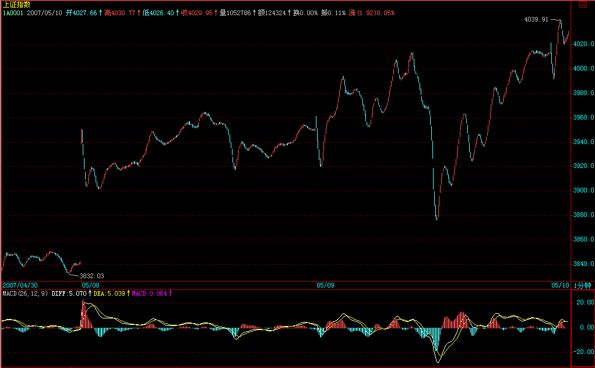
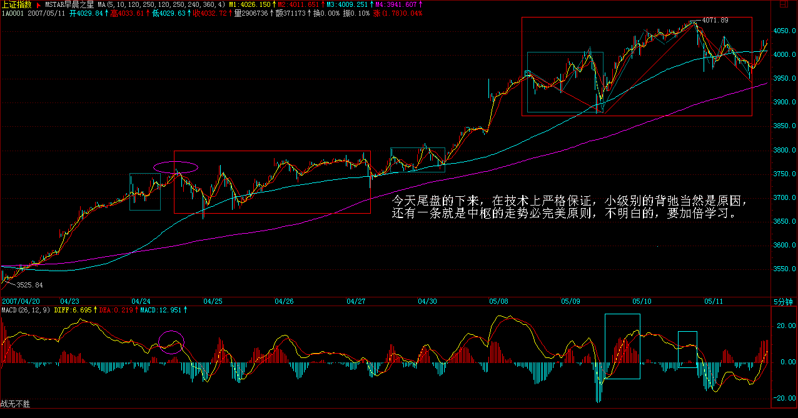
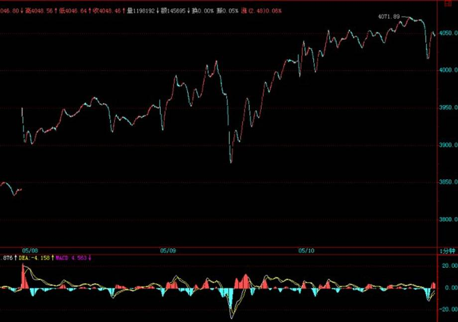
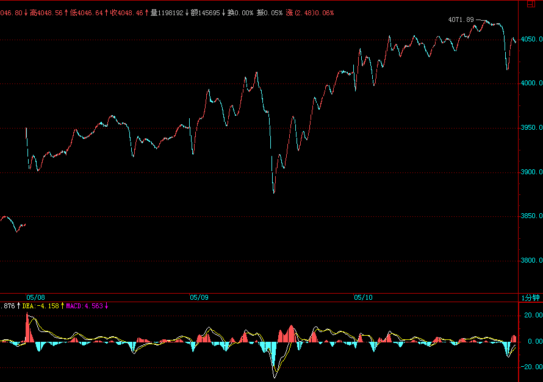
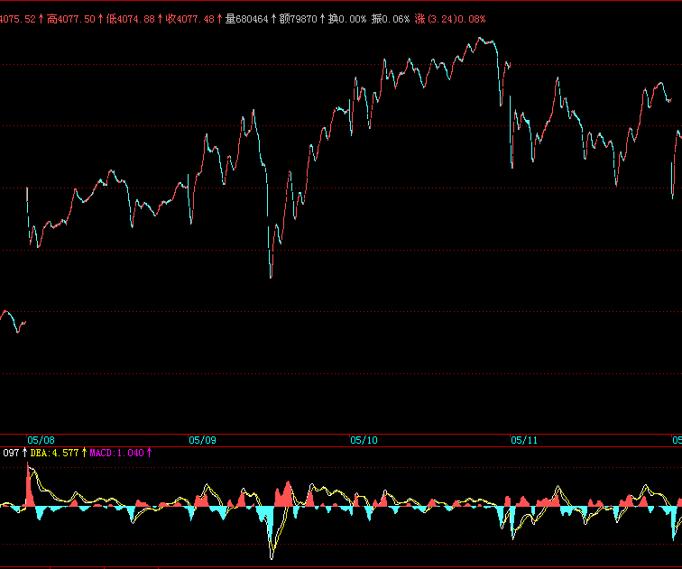
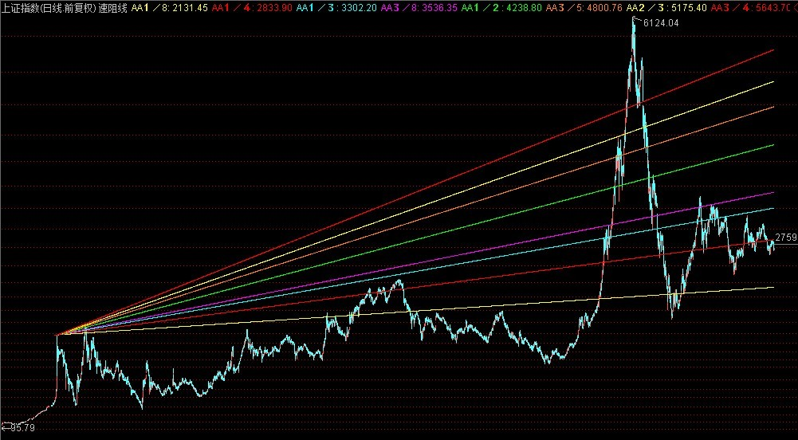
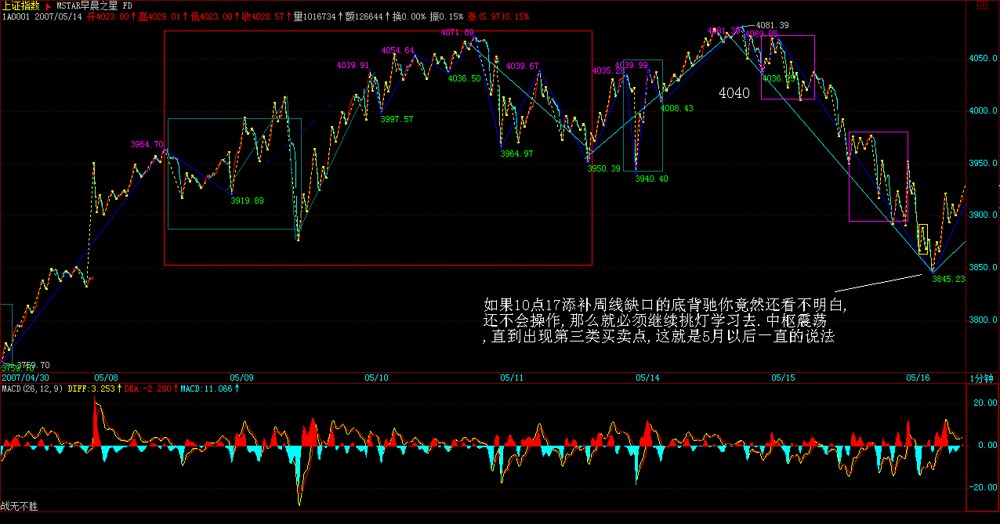
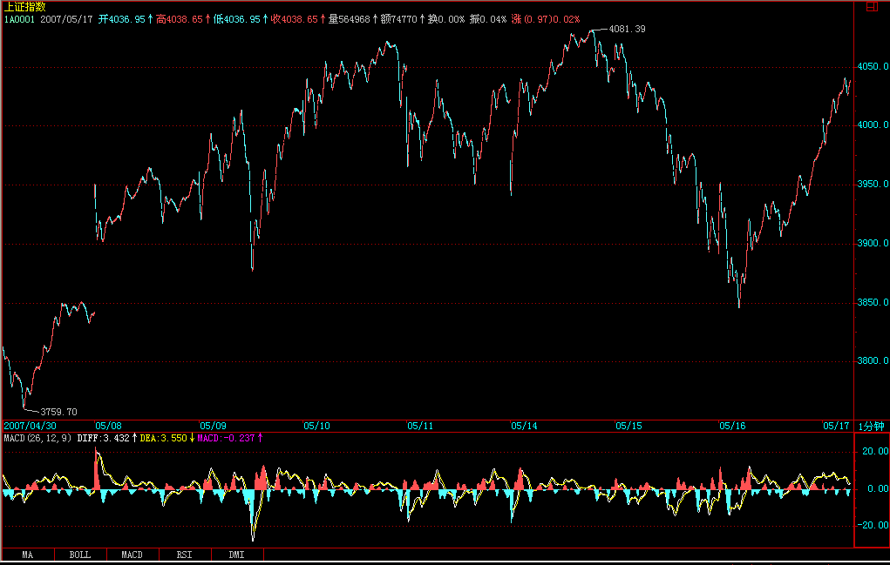
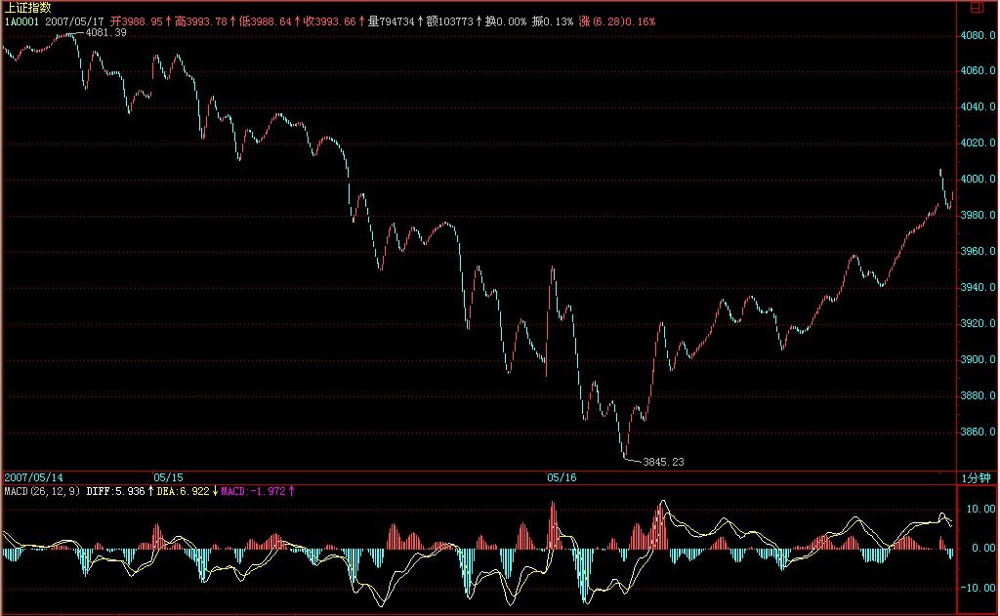
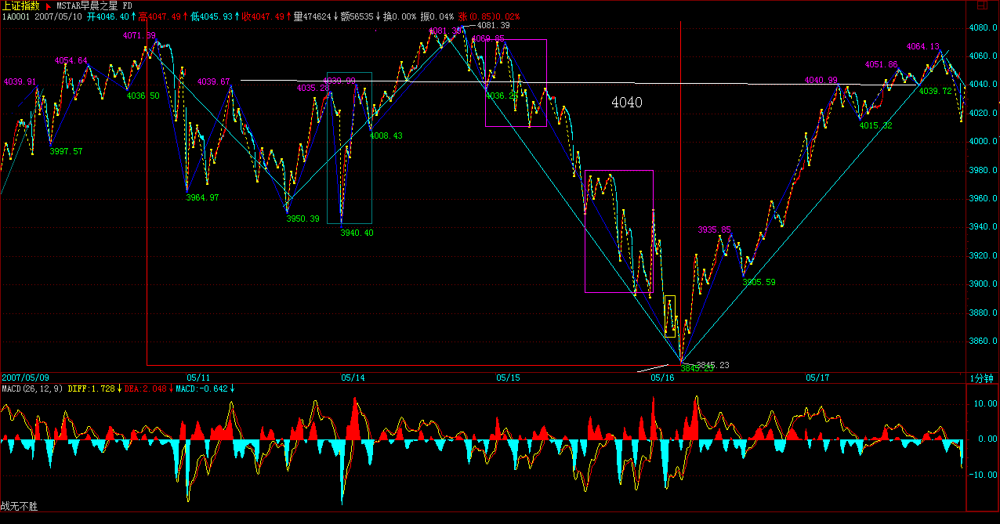

|
 |
教你炒股票51：短线股评荐股者的传销把戏
(2007-05-09 08:30:16)
国人，赌博心理特重，一个六合彩就可以横扫大半中国，那些偏僻的山村都可以为之痴狂，而这里包含的某种特点，正是任何群体性运动的基础。股票市场中，那些短线股评荐股者，如传销般，也就利用这种群体性癫狂来达到目的。
有一种最弱智的，就是为所谓的庄家出货卖嘴的，这种长久不了，一两次后就没戏，只能改换门庭，由于没有可持续性，所以不值得专门研究，而且靠找人卖嘴才能出货的庄家，智力水平太低，没资格让本ID去谈论。
现在说的是这样一种具有可操作性的把戏，不妨假设有一痴呆儿，在一每天浏览量超过10万的网站或电视上随机地推荐短线的股票，有5%的人相信并尝试第二天开始半小时内买入，也就是有5000人，每人平均的买入量是2000股，也就是有1000万的买入量，这个买入量，对于绝大多数的股票来说，足以使得该股票具有了极大的支持而呈现大涨。而对于另外的95%，有些因为高了而拒绝买入，但至少有一个印象会留下，这股票推荐得真准，在下次荐股游戏中，这就是新的资源。而有一部分胆子大的，会在更高的价位买入，这样，一个资金的流动输入就产生了，而买入挣钱的，都爱到处忽悠，所以，相应人群就会不断增加，直到资金流入与筹码的松动达到平衡。
这样一个系统，可改进成组织更严密的传销：先建核心的第一级会员，会员，当然都要交会费，得到的回报是可以先买到第一批的货，在广泛向外推荐前，可以优先得到购买权。而更精细的系统，可以把会员分为不同的等级，这样，可以让购买流量得到一个更好的控制，一个逐步扩散的传销效果。这种有精细结构的传销系统，可以支持一个较长时间的操作，大致就演化成一个庄家行为，只是这庄家是很多不同等级的人构成的一个有联系的组织，这比一般的庄家有一个好处，就是不存在一个人挂一大堆虚帐号的监管风险，坏处之一，就是这样一个结构，其稳定性是有问题的，一有困难，很容易树倒猢狲散。
对于特别短线，经常换股的传销系统，由于最终必然最大量的人被套，这样来回几次后，就会使得外围的传销者资源逐步枯竭，最终整个系统崩溃，所以，那些经常在电视、网站上，每天N股的人，一般来说其流传寿命都不会长，一轮大的调整，就可以消灭一大批。当然，每轮行情起来，都可以看到类似的人出现，然后消失，如此而已。而比较长线，有着精细结构的传销系统，就会逐步演化成所谓的私募基金，这是比上述传销系统更稳定、更能长久的结构，这就是市场里这类无聊把戏的生命演化进程。
而市场中绝大多数的，都不过是在参加一种无意识的传销游戏，为最终的炮灰提供足够的人肉人骨。而在基金等层面上，那是另一种游戏，但其天生的弱点，有着许多可攻击的地方。因此，基金会逐步演化成对冲基金或更稳定的合伙制结构，这里的赎回或对风险的忍受程度有着更大回旋余地，因此有着更高层次的市场生命。
市场如同大海，这里有各种的生命形态，本ID之所以说这些，是要让各位对市场中各类资金的生存状态有一定的认识，这些生存方式，都会存在，不会出现某种形式一统天下的状态。有人可能要问本ID属于哪种形态，本ID哪种形态都不是，如果一定要说，那本ID属于猎鲸者的那种，你必须对所有猎杀对象有着最清楚的认识，才能对此找到最好的攻击点，然后杀之，而本ID只对大海里最大的生物感兴趣，本ID只猎鲸，特别对鲸群有兴趣，一次只杀一鲸的游戏，早玩腻了。
有人又要问本ID不也推荐过股票吗？那只是本ID希望各位能专心学习，除了那十四只，还有一些最大盘的但告诉各位只是用来打架散户没必要介入的，最后明确说过的，就是VC股600635（5元多说的）和北京旅游股000802（10元多说的）， 3月19日加息后1个多月到现在，从来不说具体股票了。为什么？因为这里的人越来越多，本ID再说具体股票，就成了传销或被人利用成传销了，本ID又不需要任何人来抬轿子，注意，本ID是猎鲸的，而不是那鲸鱼。
当然，本ID说过的，都会负责到底，因为本ID自己依然在猎鲸中。但绝对不是说让各位现在才去追高买，其实，对本ID猎鲸中的或不是猎鲸中的，方法是一样的，本ID是要把渔的方法告诉各位让各位自己去找鱼吃，关键是有什么级别的买卖点而不是对象。至于刚好发现本ID也在猎着的有买点，那当然也可以介入，但不是让各位集体无意识地都聚集在本ID的猎鲸对象上，这不又成了变相的基金了？猎鲸船本来就比鲸鱼大，把本ID变成鲸鱼那不太小看本ID了？
本ID做事情从来都不想含糊，加上600635、000802，总共16只，依然是本ID猎鲸船所追杀的物体，当然，实际上，这猎鲸船追杀的目标还不只这16只，具体的结构，当然不能说了，这里汉奸这么多，记得2000多点那美国老头胡诌本ID说要把他打到满地找牙夹死他时说过什么吗？把这16只分类一下，最早一批是去年12月底，最后一只是3月中旬，现在是5月初，按说过以后的涨幅大致分类一下，这不是为了炫耀，而是让后面来的知道本ID猎杀的介入位置，从中也可以发现一些技巧性的问题。本ID介入的位置和说的位置大致一样，先来的当时买的，基本和本ID的成本是一样的，因为本ID的货多，当然成本不可能比各位低。但是，现在可就不一样了，因为本ID的成本不断在下降，这种最厉害的方法，本ID在课程里可是毫无保留地说过的，就不知道有多少人能办到了。
200%及以上：000416、000777、000999、600432、600635、600578、000099
150%以上：000778、600777、000915
100%以上：000600、600649
50%以上：000802、600343、000938、000998
股票不过是小道，但条条小道通大道，本ID在这里费口舌，有一个目的，是希望这里至少能有人通过学习以及自我磨练，最终能成为猎鲸者。其次，更重要的，要小道而大道，这才不枉来这里一趟。至于想把这个变成传销场所或来这里希望找点传销玩意的，那就入错门了，本ID这里不需要这么多人，至于那些希望小道而大道或至少有志于成为猎鲸者的，如果觉得有更好的地方，也没必要留在本ID这里。本ID只对面首感兴趣，而且只在419时候对面首感兴趣，对徒子徒孙，从来没兴趣。各位自便吧，本ID这里门前草深三尺也无妨。
每日解盘(2007-05-09 15:25:06)
各位今天爽吗？这样的震荡简直是一个最好玩的游戏，这一点，昨天已经给予最大的提示了。今天没把缺口完全补上，这问题不太大，主要是今天看着缺口来的人太多了，个个争着提前量。至于技术不好的，昨天也说了，看5日线，不破就上上下下享受一下，也不错。
当然，4000点的突破不可能一下就确认完成，这里的震荡依然少不了，技术点说，就是要在这里形成一个有效的有点级别的中枢，然后出现该中枢的第三买点，才能确认突破的有效性。这个过程在理论上当然有失败往下形成第三卖点的可能，所以一切无须预测，看图操作是唯一正确的。

每日解盘2007-05-10 15:36:28
本ID昨天说，今天要继续震荡。但估计到14点45分前，所有人都以为本ID说错了，以为那些忽悠今天要冲多少多少点的股评对。结果怎么样，就不用本ID说了。震荡，不一定是绿盘狂跌才是震荡，就像一个中枢，在下面震也是震，。上面震难道就不是震了？今天尾盘的下来，在技术上严格保证，小级别的背弛当然是原因，还有一条就是中枢的走势必完美原则，不明白的，要加倍学习。

关于4000上下的震荡形成的中枢，要突破，向上要有第三类买点，否则，依然存在向下变盘的机会。
在第三类买点出现，中枢完结前，震荡继续。用分时中枢概念看，昨天是一平衡市，今天也是，但今天中枢的位置向上移了，明天就面临三种选择，强的继续上移，中的围绕今天中枢震荡，弱的回试昨天中枢，从而让一般概念意义上的中枢形成级别扩展。根据明天开盘的走势，这一点不难分辨。这些都是很短线的活动，脑子不够使的，就看5日线就可以，本ID说过多次，要量力而为，用自己最精通最有能力控制的方法，花心萝卜不是人人能干的，要成为花心萝卜，要学很多工夫的。


大牛市的序幕，还未真正拉开。
(2007-05-10 15:56:10)
附录：
本ID人在外地，但看盘不一定都在北京的。昨天承诺各位要收盘解盘，当然要执行。 先下，再见。

大牛市的序幕，还未真正拉开。
(2007-05-10 15:56:10)
股市走势看似复杂，其实有规律可言。这轮已延续两年的上涨行情，在技术上其实十分简单，为了能清楚说明，必须先揭示一个上证指数的历史走势规律。为了简单起见，只以月线为例子。
1992年5月，上证指数创出1429点的第一个历史高点，其后的历史高点，都与该点位及时间有着密切关系。
1993年2月，上证指数1558点的历史性大顶，恰好触及1429点开始，每年上涨180点，每月上涨15点的压力线，当月该线在1429+15X9=1564点。
2001年6月，上证指数2245点的历史性大顶，恰好触及1429点开始，每年上涨90点，每月上涨7.5点的压力线，当月该线在1429+109X7.5=2246.5点
以上两个历史大顶都是上证指数历史上最重要的顶部点位，都与1429点开始的按某速率上涨的压力线高度相关，这显然不能以巧合来敷衍解释。
有人可能要问，相应速率是否随便设置？答案是否定的。任何人都知道，圆周是360度，这构成分析的基础。以每天上涨360点为基准，相关压力线速率以其1/4、1/2、3/4等比例构成。显然，在上述两例子中，压力线速率分别由1/2和1/4构成。
由此不难理解，从2007年1月开始的3000点下盘整，不过是突破1/4线后的强势回调整理，3月，该线在1429+178X7.5=2764点。经过1-3月的调整，在3月初确认对该线突破的有效，而所谓的227大暴跌，不过构成对该线的最后一次回抽确认，其后出现的大幅上涨，在技术上理所当然，不过是1/4线突破确认后，展开对1/2线顺理成章的攻击。只是不学无术的空头，对此茫然不知，演出了一场企图在2700点放空的闹剧。
5月，1/2线在1429+180X15=4129点，该点位在技术上有强烈意义。从时间上看，1429点开始有着同样重要的历史规律。1558点与1429点相差9个月，2245点与1429点相差9年，而今天5月，是1429点以来的180个月，360的一半，一个极为重要的时间之窗，其后，不发生点事情，显然是不可能的。
从纯技术的意义上，1/2线能否有效突破，是考验本轮大牛市的真正试金石，不能有效突破该线，将使得受制于十几年来1/2压力线的运行模式依然延续。
反过来说，到目前为止，这两年股市的上涨极端温和，是旧有的股市运行内在速率引导下的恢复性上涨，没什么可大惊小怪的。从某种意义上说，只有真正有效突破1/2线，一轮脱胎换骨的大牛市，才真正拉开序幕，否则，不过是以前节奏、速度与模式的重复而已。因此，能否有效突破该线，构成对多头的真正考验，而空头，必然以此为屏障展开反攻。围绕该线的争夺，将构成两年以来第一次真正有分量的多空对决，一场决定行情新旧模式的大对决。
相应走势，只有三种可能的演化：
一、在该线前止步或在该线上形成多头陷阱进而形成一个大级别顶部；
二、突破该线并围绕该线进行强势的、如1-3月在突破1/4线后进行的类似盘整，然后寻机突破。
三、强力突破并远离该线后，以一个强势的回调来确认对该线的突破，然后再展开对3/4线的攻击，目前该线的位置在1429+270X15=5479点。
无论市场采取哪种选择，对该线的突破、回试、确认等，都至少需要3个月的时间，因此至少在7月之前，该线将主导着大盘的走势。至于大盘究竟采取哪种选择，无须预测。一切市场走势都是市场所有参与者合力的结果，并没有上帝事先确定。而市场的选择，当下地在走势中呈现，只要对市场日线以下级别的走势规律有足够认识，不难从中提前发现。无论市场最终如何选择，都不过构成超级大牛市的一个小片段。
该1/2线是新旧两种模式的分水岭，一旦有效突破这每年上涨180点、一直控制大盘十几年的压力线，就能把该线有效转化成其后行情发展最坚实的底部支持。突破是迟早的事，而基础打得越扎实，对行情发展越有利。

再见,这美食多于美男的城市
(2007-05-14 15:23:24)
马上要离开深圳去长沙,然后有人在机场接本ID去某市,临走前,按承诺,对今天的走势说两句.大盘今天就是一个典型的震荡,深圳强点,但也就是一个强点的平衡市,对于上海来说,今天的中枢就在2040上下,这是明天的一个很重要参照,站稳或围绕震荡都没问题,否则将再次去考验4000点.
各位,今天爽了吗?
(2007-05-16 15:26
各位,今天爽了吗?

中枢震荡的操作要领在课程里都有,不会的学,不熟练的继续练习.


受传销蛊惑的，绞肉机最好的货！
(2007-05-17 15:27:16)
回到北京，还是不错的。今天还有不错的，就是看到还有人一直拥有600607，13元上下到现在，1个来月，其实没什么厉害的，最厉害的，这是汉奸的船，本ID比较高兴的，是能让这里的人能一起乘乘汉奸船、抽抽汉奸血，这种感觉和那16只股票是不一样的。

本ID反复强调，关于1/2线最终的震荡级别与形式，都是形成中的，而现在，只是其中的一部分，这就是种子，不断延伸、扩展下去，而大盘，永远都只是本ID理论的注释。实际的操作，特别对于散户的操作，你只要知道这个大概的框架，根据短线的背弛进出，这个就能创造出比单边更厉害的利润。当然，这需要技术，技术是靠磨练的。
教你炒股票51:回复
(2010-08-12
17:39:37)
缠中说禅：
2007-05-09
15:31:39
匿名] 球球
缠中说禅：
2007-05-09
15:35:48
[匿名] 水房姑娘
缠中说禅：
2007-05-09
15:40:44
[匿名] 恒灵
缠中说禅：
2007-05-09
15:43:38 [举报]
两只老虎
缠中说禅：
2007-05-09
15:49:20 [举报]
[匿名] 缠途漫漫
缠中说禅：
2007-05-09
15:51:34 [举报]
一粒米
缠中说禅：
2007-05-09
15:54:29 [举报]
匿名] 玫瑰心月
缠中说禅：
2007-05-09
15:58:13 [举报]
[匿名] 见习者
缠中说禅：
2007-05-09
15:59:37 [举报]
缠中说禅：
2007-05-09
16:20:29
[匿名] 黑胶唱片
缠中说禅：
2007-05-09
16:28:32
[匿名] 天山飞狐 =====
缠中说禅：
2007-05-09
16:34:58
[匿名] 大盘
缠中说禅：
2007-05-09
16:40:56
[匿名] 白玉兰
缠中说禅：
2007-05-09
16:45:18
[匿名] 后知后觉 ＝＝＝
缠中说禅：
2007-05-09
16:47:04
[匿名] 白玉兰
缠中说禅：
2007-05-09
16:56:39
[匿名] 见习者
缠中说禅：
2007-05-09
17:00:58
看来，股票的煞气比较厉害，所以必须要开讲打坐了。
缠中说禅：
2007-05-10
08:50:53
大盘讲评在收盘后附录，由于本ID要去一趟深圳，所以下午会把上次提到的对大盘中期走势的技术分析文章发出，明天就不发帖子了。
对证监会的警示,请充分理解!
(2007-05-12 17:57:25)
今天,N的N次方的人通过各种渠道骚扰本ID,为的是证监会的警示,估计来这里的人也是六神无主的多,本ID趁着宴会前的N分钟,在深南路上某五星级宾馆为各位写两句.
对证监会的警示,请充分理解!前面,本ID已经说过,无论山东人后面因为各种压力\原因干出些什么事情,大家都应该原谅,毕竟是这一期的证监会摆脱原来的思维定式,为中国资本市场的最终破题给出了一个大的突破,就算后面有多少不得不为之之事,怎么也是功七分,过三分了.一个大国,任何事情都是一个平衡的结果,这点也多次指出,没有任何人,可以完全不理会这种平衡,必要的姿态,就是对股市最大的关心,如果这都体会不到,像那些不学无术的多头这两天还叫嚣直接突破4000点冲多少多少,这就是本ID前面给他们的定义,是比空头和汉奸更可恶的人,是典型的左派幼稚病.
本ID反左反右反中，对中期的走势,本ID说了有一篇文章,将在适当的时候给出,5月10日,那文章出来了,在里面最主要的话就是"因此，能否有效突破该线，构成对多头的真正考验，而空头，必然以此为屏障展开反攻。围绕该线的争夺，将构成两年以来第一次真正有分量的多空对决，一场决定行情新旧模式的大对决。"
空头的这种反攻,当然不纯粹在市场面上,还有政策上的反攻,这完全都在本ID的剧本之中,大家现在可以再次体会10日文章中的这句话:"而今天5月，是1429点以来的180个月，360的一半，一个极为重要的时间之窗，其后，不发生点事情，显然是不可能的。"
注意,本ID在这里只是强调,这种寒流是理所当然,完全在剧本之中的.不妨在告诉各位一个秘密,本ID的一个老熟人,10日也同时发布了一篇文章被各大媒体传播,当然,本ID文章的立足点和他完全不同,但各位如果对此人背景有了解,不难知道点什么.
5月开始展开多空大对决,这不仅仅是市场上的,还有是市场的政策\指导思想等方面.由此可见,技术分析的意义可以深入到事物的底层,为什么和360有关?想想人的身心波动周期吧.
必须再提醒,关于那三种震荡模式的选择,目前并没有任何上帝已经给出答案,本ID事先告诉你将发生事情的基本模式,而具体的选择,市场自己会有答案,并没有市场的上帝就选择了这三个月就一定要选择其中的第一种,一切都在市场各方力量的平衡中.而有了本ID的理论,任何的震荡,都是天堂,这里一样会产生和单边走势一样大的利润.关键不是走势,而是你的技术.那种只有单边才有快感的,一定成不了猎鲸者.
请再次重温本ID10日文章的最后一段:"无论市场最终如何选择，都不过构成超级大牛市的一个小片段。该1/2线是新旧两种模式的分水岭，一旦有效突破这每年上涨180点、一直控制大盘十几年的压力线，就能把该线有效转化成其后行情发展最坚实的底部支持。突破是迟早的事，而基础打得越扎实，对行情发展越有利。"
请用你的眼睛去警惕这几类人:
1 从1000\2000多点就开始叫嚣崩盘,每次一夜情就兴奋异常的.
2 只会在市场上火上添油的,以散户为冲锋队,把散户当炮灰的.(想想为什么本ID在9日要写"教你炒股票51：短线股评荐股者的传销把戏",本来希望新浪能放到主页,让更多人看到,包括10日的文章.)
3 出货后就叫嚣要把资金拿出国,散布要秋后算账的.(今天在北大,就上演了这样一场闹剧,本ID耳目众多,这倒是知道的.)
4 带着捣毁中国资本市场任务的。
5 任何要向你收费的。
|
|
|
|